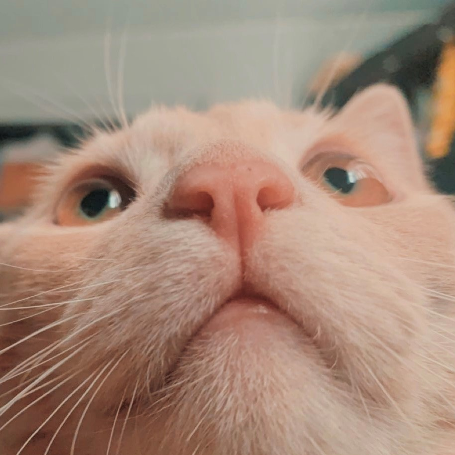

From coloring books and sidewalk chalk to scrapbooking and painting to Photoshop and digital art. Gather around, kids, let me tell you my story. Ever since I was little, I've
been very in touch with my creative side, but I never saw my creative hobbies as something I could pursue as a career. As a child, I wanted to be an astronaut, a marine biologist,
a psychologist, a politician- but did I really? This is a story that's been told, but, lucky for me, I diverged from "what I should do." Eventually. But before I get there, let me describe my background a little bit more. When I was fifteen I was obsessed with Disney. I started replicating drawings of Disney characters that I found online
and from there, I branched out to other movie characters, celebrities, and people in my real life. I loved character design and I started and completed a drawing just about every day. As much as
I loved to draw, it wasn't until my senior year of high school that I took my first art/drawing class...and I hated it. I've never had a problem with an instructor, in fact, I was a bit of a teacher's
pet back in the day; but this instructor was THE WORST. I think that teachers deserve the world for what they do, but this one sat at her desk for an hour instead of teaching, she expected us to work
independently even though we had no training or textbook, and despite this, gave us very little freedom in what we chose to draw and graded harshly. I dropped the class at the end of
the first semester and didn't touch any tool but an HB pencil for two years (that's art-talk for "I didn't draw"). Okay. Rant over.I decided to go into college as a film major because that sounded cool. (Don't make a major financial decision because it sounds cool.) By the end of my first year in college, I was very shocked,
confused, depressed, anxious, curious, and, sometimes, happy with my newfound adult life. To cope with this I did all kinds of things. One of those things was what I would call experimental art. As a
film major, but closeted not film major, I tried making art with video as my medium.